Queen's music was transposed into many different formats for scorebooks in Japan throughout the 70s and 80s. Lyric books (or "poetry collections") were also popular, especially since they provided corresponding Japanese translations.
Scorebooks
Name/Date
Cover
Publisher/Notes/ISBN
1975 or 1976
Queen Rock Piano Sounds
Queen Rock Piano Sounds
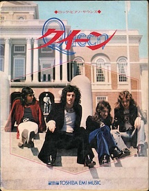
Rittor Music. I believe this is an early publication and seems to be pretty rare.
1976
Queen A Night at the Opera Score
Queen A Night at the Opera Score
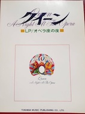
Rittor Music. Contained color photos
1976 or 1977
Queen Super Rock Guitar Score
Queen Super Rock Guitar Score
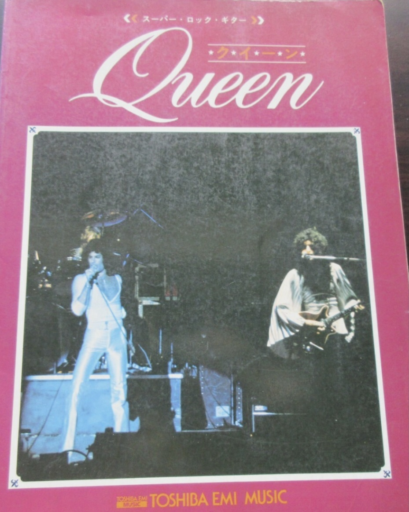
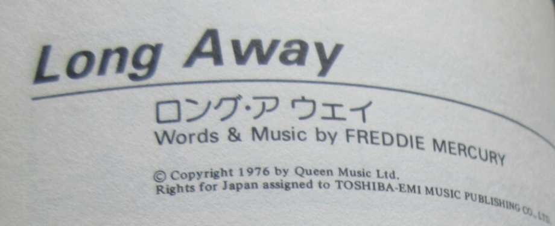
Rittor Music. Apparently Long Away was written by Freddie...
1976?
Queen 1 [first edition seems to be just "QUEEN"]
Queen 1 [first edition seems to be just "QUEEN"]
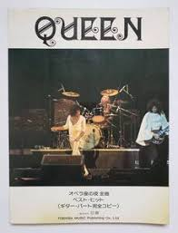
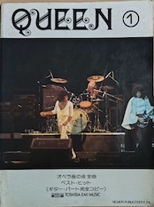
Nichion Music. Guitar parts from A Night at the Opera
1977?
Queen 2
Queen 2
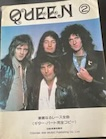
Nichion Music. Guitar parts for A Day at the Races
1977
Queen A Day at the Races Score
Queen A Day at the Races Score
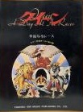
Rittor Music. Contained color photos
197?
Queen Best Band Score
Queen Best Band Score
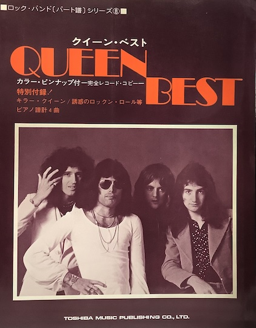
Rittor Music. Came with color pinup & 8 pages of color photos. Freddie's estate sold a copy of this in the 2023 Sotheby's auction.
1978?
Queen Rock Organ Score
Queen Rock Organ Score
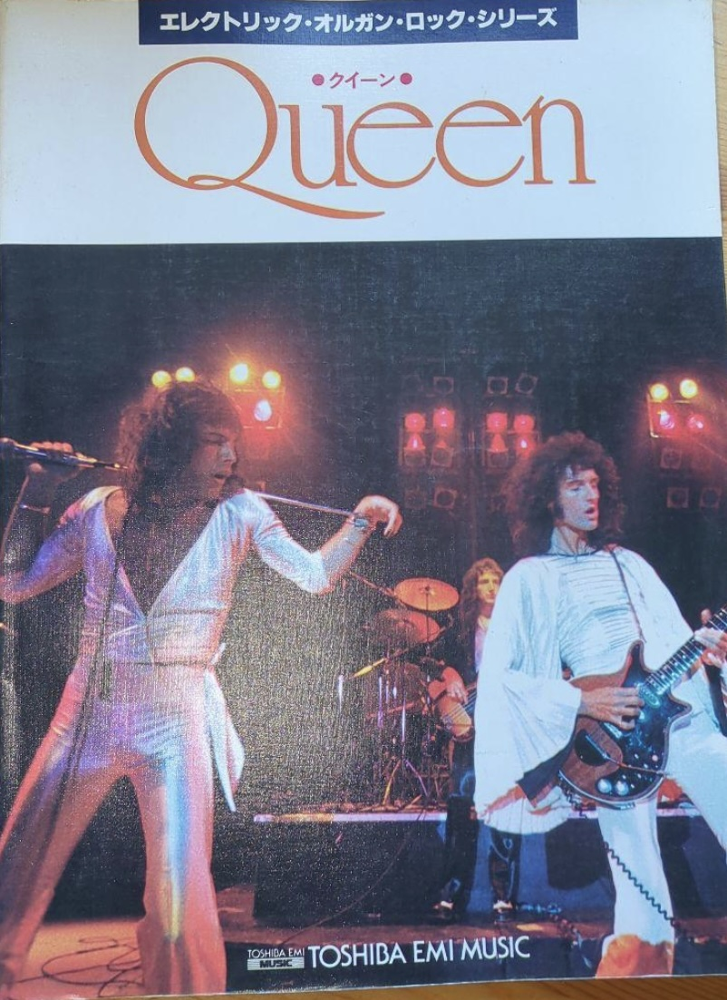
Rittor Music
1978?
Queen Best II Box Set
Queen Best II Box Set
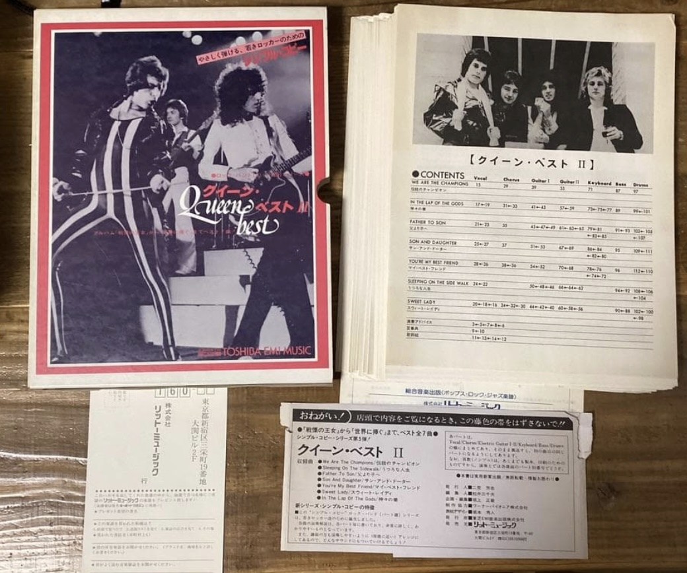
Rittor Music
1978
Queen II Rock Piano Sounds
Queen II Rock Piano Sounds
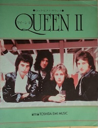
Rittor Music. The "II" in the title refers to the volume of this score—it contains songs up to News of the World
1978?
Queen Best Piano Songs
Queen Best Piano Songs
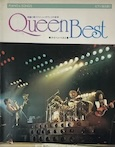
Contains songs up to News of the World
1978?
Queen 3
Queen 3
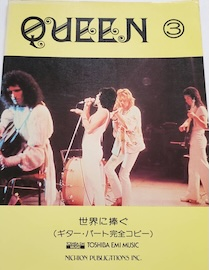
Nichion Music. Guitar parts for News of the World
1978?
News of the World Piano Score
News of the World Piano Score
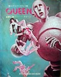
Nichion Music
1978?
News of the World Complete Score
News of the World Complete Score
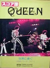
Nichion Music
1979?
Jazz Queen
Jazz Queen
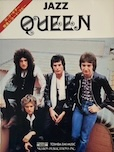
Nichion Music. Guitar parts for Jazz
1978
Brian May Music Technique
Brian May Music Technique
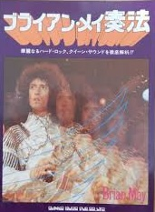
Shinko Music
1979
Queen Live Killers: Brian May's Live Guitar Technique
Queen Live Killers: Brian May's Live Guitar Technique
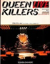
Toshiba EMI
late 70s
Super Rock Guitarist: Brian May's Technique & Sound
Super Rock Guitarist: Brian May's Technique & Sound
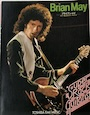
EMI
1980
Queen The Game Scorebook
Queen The Game Scorebook
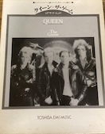
EMI
Early 80s
Queen Sounds Band Score
Queen Sounds Band Score
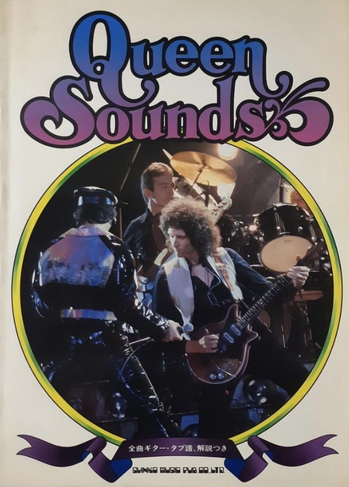
Shinko Music. Contains music through The Game
1984
Queen Super Best with Tablature
Queen Super Best with Tablature
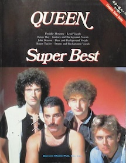
DoReMi. 4-810-85346-2
1991
Queen Best Band Score
Queen Best Band Score
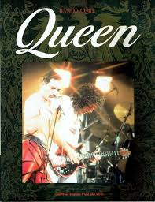
Shinko Music. Guitar/bass
1994
Queen Best Band Score
Queen Best Band Score
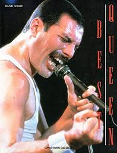
Shinko Music. 4-401-34756-0
1994, 2002, 2005
Queen Off the Record
Queen Off the Record
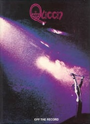
1-859-09224-8
199?
Queen Made in Heaven Wide Edition
Queen Made in Heaven Wide Edition
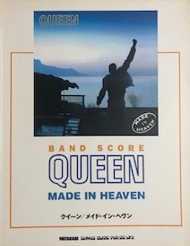
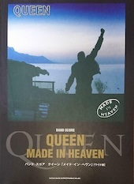
Guitar score. 4-401-36635-4
1996
Queen Karaoke Best 10
Queen Karaoke Best 10
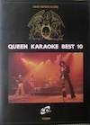
Lead guitar parts, came with CD
1998
Queen Best Band Score
Queen Best Band Score
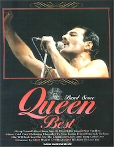
Shinko Music. 4-401-34879-4
1998
Queen Super Best
Queen Super Best
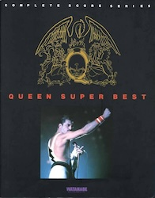
DoReMi. 4-810-85914-0
199?
Queen Super Best vol. 2
Queen Super Best vol. 2
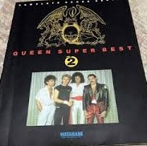
DoReMi. 4-8108-5949-5
2000
Queen Piano Collection
Queen Piano Collection
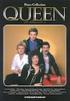
Shinko Music. 4-401-01439-2
200?
Queen Greatest Hits Sheet Music
Queen Greatest Hits Sheet Music
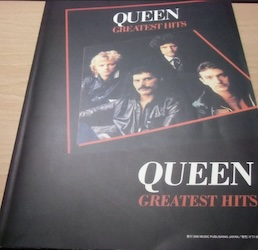
Shinko Music version of Hal-Leonard book
2001
Queen in Vision
Queen in Vision
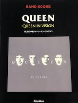
Rittor Music. Band Score
2004
Queen Rocks Band Score
Queen Rocks Band Score
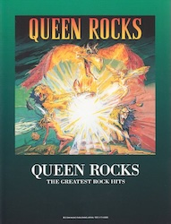
EMI. 4-899-9-99121-2
2005?
Best of Queen Band Score
Best of Queen Band Score
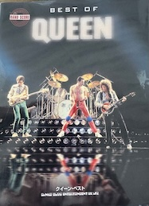
Shinko Music version of Hal-Leonard book
2014, 2016
Queen piano Solo & Singalong
Queen piano Solo & Singalong
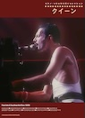
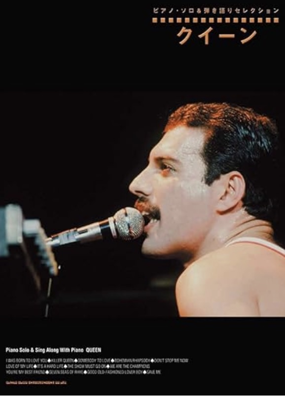
Shinko Music. 4-401-03395-9
2018
Queen Sheet Music
Queen Sheet Music
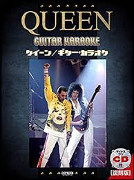
DoReMi. Guitar & karaoke, came with CD. 4-285-14794-0
2019
Queen Singalong with Piano
Queen Singalong with Piano
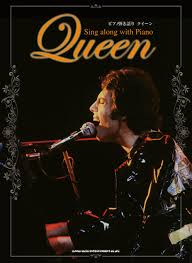
Shinko Music. 4-401-03801-5
2019
Queen Piano Solo
Queen Piano Solo
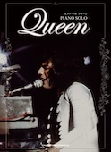
Shinko Music. 4-401-03795-7
Lyric Books
Name/Date
Cover
Publisher/Notes/ISBN
1978
Queen Lyrics
Queen Lyrics
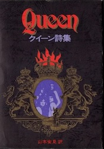
Shinko Music. Contains all lyrics up to News of the World
1982
Queen Lyrics Rock Book
Queen Lyrics Rock Book
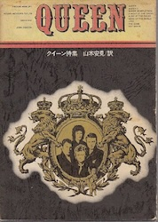
Shinko Music
1986
Queen Poem Collection
Queen Poem Collection
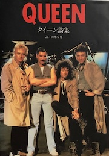
Shinko Music. Contains all lyrics up to A Kind of Magic. 4-401-61734-7
2002
Complete Queen Poetry Collection
Complete Queen Poetry Collection
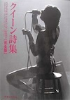
Shinko Music. 4-401-61734-7
2011
Complete Queen Poetry Collection
Complete Queen Poetry Collection
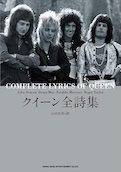
Shinko Music. 4-401-63549-3
2019
Queen the Complete Lyrics
Queen the Complete Lyrics
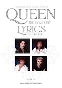
Shinko Music. 4-401-64728-9